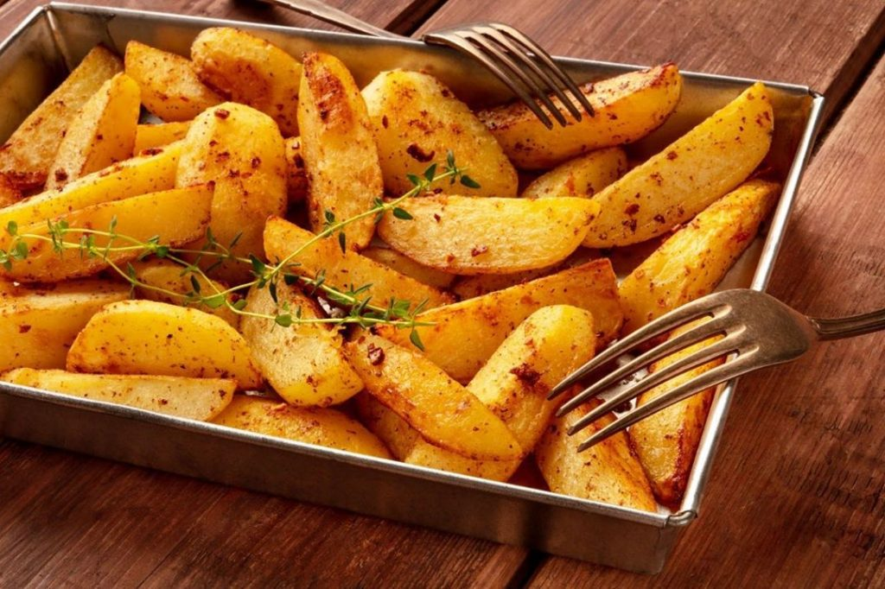

Batata Rustica

Receita
Como preparar deliciosas batatas rusticas assadas?
A receita e mais simples do que voce imagina. Veja a seguir:
Ingredientes
- 3 batatas médias
- 1/2 colher de sopa de alecrim seco ou 1 colher de sopa de alecrim fresco.
- Azeite de oliva (o suficiente para envolver as batatas).
- Sal grosso ou comum, a gosto.
Como fazer?
- Lave bem as batatas com uma esponja, não precisa tirar a casca.
- Corte as batatas em gomos no sentido do comprimento.
- Corte em metades até formar gomos com a espessura que preferir.
- Coloque-as numa panela, cubra com água e acrescente o sal.
- Cozinhe por 6 minutos a partir do momento que levantar fervura.
- Desligue o fogo e escorra a água.
- Deixe as batatas numa peneira para escorrer e evaporar bem a água.
- Transfira para uma assadeira e adicione o alecrim e o sal.
- Regue com azeite de oliva e misture cuidadosamente as batatas para envolver todos os pedaços.
- Espalhe os gomos pela assadeira, sem encostar ou sobrepor um no outro para assar inteiro.
- Leve ao forno preaquecido a 200 °C por cerca de 30 a 40 minutos.
- Retire do forno, e sirva quente! Bom apetite.